Wild Arcana
3인칭 마법 액션 보스 러쉬
김성훈 · 개인 프로젝트 최종 발표
Unity 6 1인 개발 · 2026. 9. 29 ~ 10. 27
01 · 게임
게임 소개
- 목표 원정 한 번에 보스 3마리 처치
- 전투 공격 예고 범위 회피 후 주문 공격
- 성장 보스 처치 보상으로 오브 강화·세공
전체 콘텐츠
01 · 게임
개발 동기
- 출발점 상호작용 환경 구축 실험 (AI 3D 생성, Claude 모델링, 실제 지도 기반 지형, 동물 AI)
- 목표 자유로운 마법 조합 (초기안: 속성 없이 코딩하듯 마법 작성)
- 범위 조정 규모 문제로 태그 방식으로 축소
- 보스전 마법 사용 대상으로 추가
01 · 게임
주문·속성 시스템
- 주력 주문(좌클릭): 장착 오브 계통 기준
- 보조 주문(Q·E): 장전 후 좌클릭 발사
- 오브 세공: 주력 주문 성질 변경
01 · 게임
스킬 구성
- 주력 주문 좌클릭, 오브 5종, 오브별 세공 분기 2개
- 보조 주문 Q·E, 충전 횟수만큼 장전, 조준점 아래 발수 게이지
- 궁극 V, 장착 스킬 거대화, 시간·적중으로 충전, Lv2 해금
| 화염 오브 | 화상 중첩 | 연소 폭발 |
|---|---|---|
| 얼음 오브 | 빙결 | 한기 증폭 |
| 전기 오브 | 연쇄 확장 | 과부하 |
| 빛 오브 | 표식 증폭 | 광휘 관통 |
| 땅 오브 | 균열 심화 | 여진 |
01 · 게임
보스원정 현황판
- B 키로 여는 지도형 현황판
- 보스 3마리 노드, 원정 진행 단계 표시
- 시작 창·현황판·포털 표식이 같은 원정 모델 공유
01 · 게임
랭킹 던전·온라인
- 랭킹 던전 강화를 다 채운 오브로 입장, 보스 6종 패턴을 쓰는 고정 표적, 제한 시간 3분
- 개인 랭킹 슬롯별 최고 기록
- 온라인 순위 Unity 온라인 서비스(UGS)로 기록 제출·전체 순위
- 계정 익명 시작, 구글 계정 연결, 클라우드 저장 동기화
02 · Claude로 만든 것
GIS 디지털 트윈 환경 구성
bake_map.py 출력
□ 첫 플레이 구역
02 · Claude로 만든 것
GIS 환경 구성 단계
- 데이터 DEM·건물·OSM 3종 합성, 원 타일 1024m 건물 658동 (주황 사각: 첫 플레이 구역)
- 지형 높이맵 + 스플랫 4층, 타일 이음새 높이 차 평균 1~2mm
- 건물 윤곽·높이 돌출, 원경은 256m 격자로 합친 메시
- 지도 같은 GIS 데이터로 PNG 굽기, 북쪽 위
- 미니맵 같은 지도 텍스처, 반경 100m, 북쪽 고정 (왼쪽 게임 화면, 오른쪽 같은 자리 위에서)
02 · Claude로 만든 것
보스 패턴 보스 6종 · 패턴 2개씩, 공격 전 바닥에 예고 범위
02 · Claude로 만든 것
일반 몬스터
- 무리 상태 무관심 → 감지 → 공격 → 퇴각, 구역 단위 재생성
- 전투 역할 근접 돌진, 사격, 폭탄, 저격, 방패
- 공격 전조 0.5초 이상 몸 펌프·깜빡임·바닥 띠·조준선 → 완벽 회피와 연결
- 보상 경험치, 세공석 조각
- 보스방 자폭병 접근 후 정지, 0.5초 예고 뒤 자폭
02 · Claude로 만든 것
UI 개선 과정 같은 화면의 수정 전·후
수정 전코드로 그린 선 글리프(PNG 텍스처), 빛·땅 주문은 HUD 칸 비어 있음
수정 후AI 시안 이미지 → 벡터 추적(SVG), 주문 10종 모두 다른 그림
과정: 게임 캡처 → 사용자 지적 → 목업과 비교 → Codex 수정 → 같은 구도로 다시 캡처
02 · Claude로 만든 것
VARCO 3D 에셋 생성 MCP로 연결한 에이전트가 생성 워크플로 직접 구성·실행
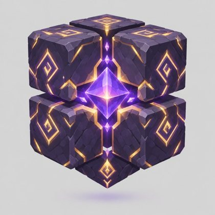
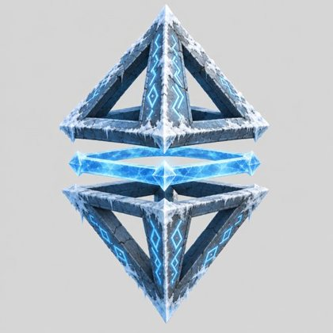
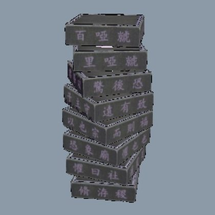
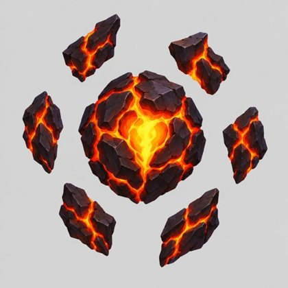
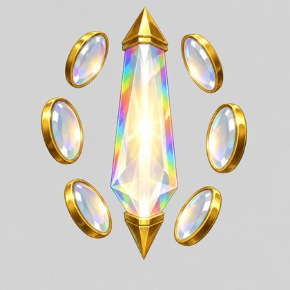
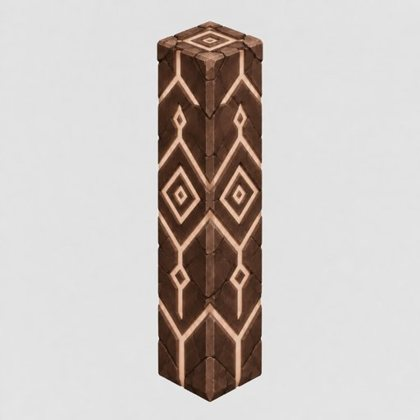
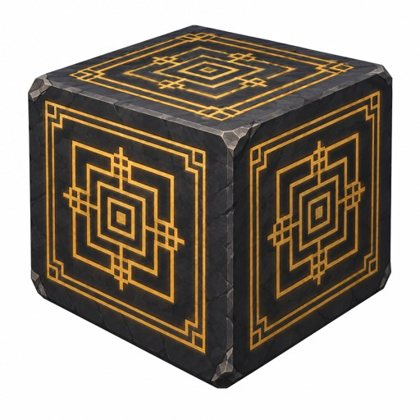
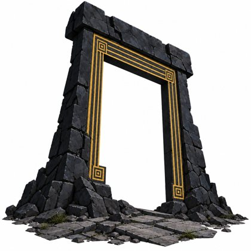
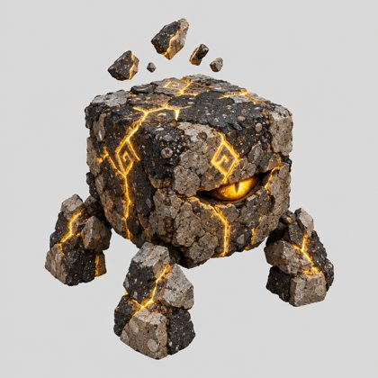
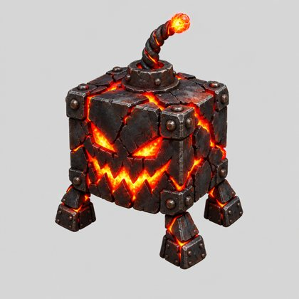
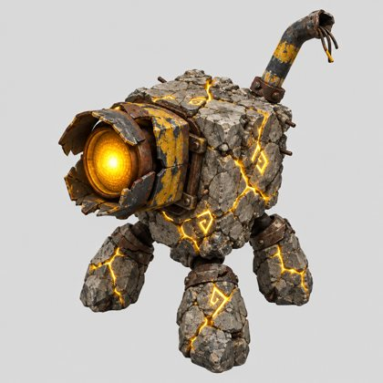
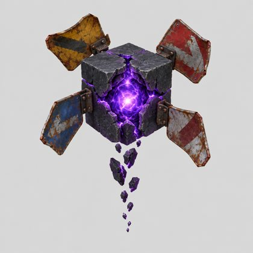
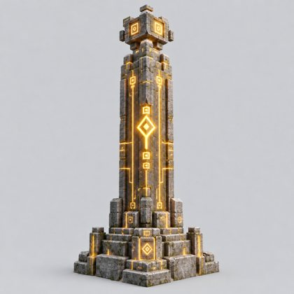
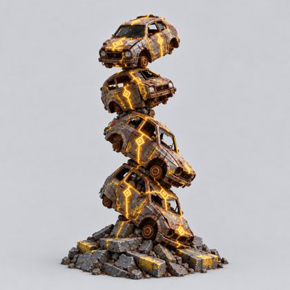
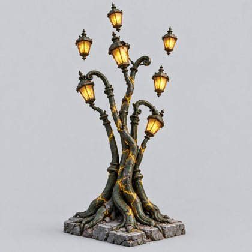
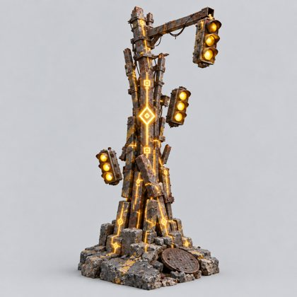
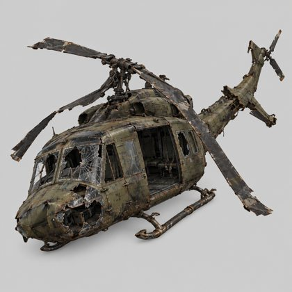
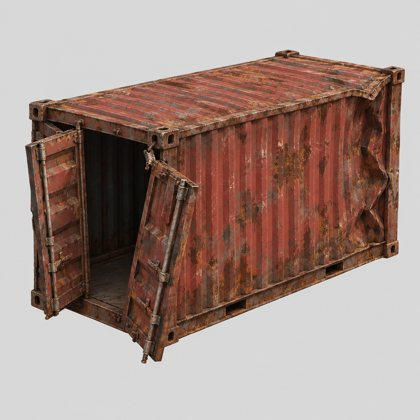
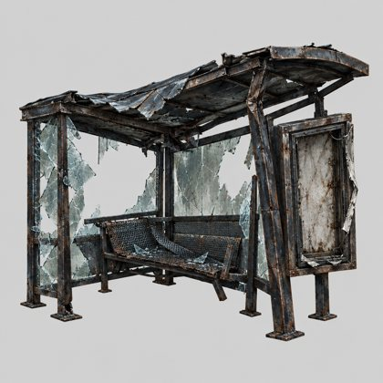
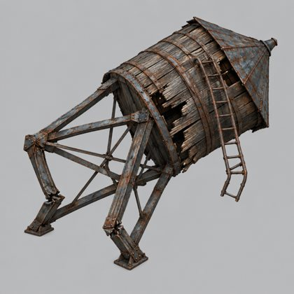
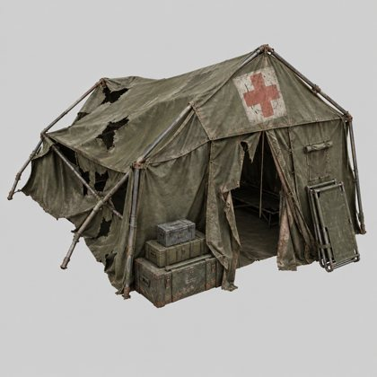
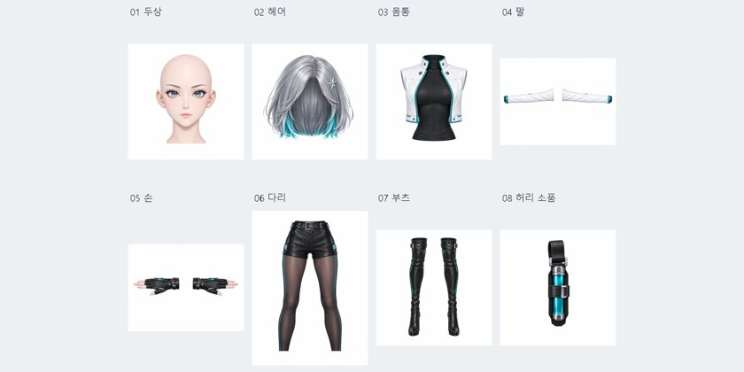
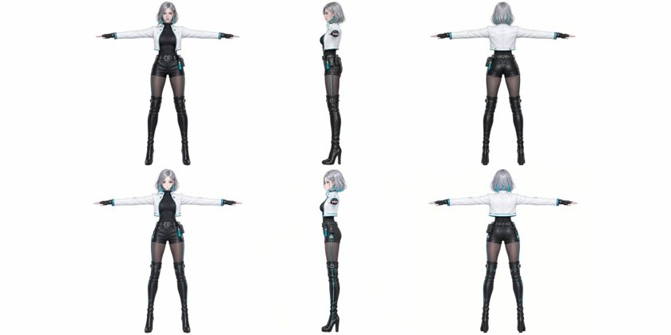
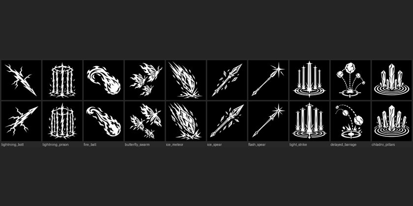
02 · Claude로 만든 것
Blender MCP 모델링 Claude가 MCP(AI의 도구 연결)로 Blender 직접 조작
03 · Claude 협업 방식
Claude 협업 구조
- 기능을 작은 이슈로 분할
- 완료 조건·검증 방법 명시
- 코드를 읽고 고칠 곳 결정
- 설계 결정은 위키에 기록
- 계획대로 코드 수정
- 이슈별 브랜치 병행
- EditMode·PlayMode 시험
- 한 판 자동 플레이(골드 패스)
- 화면은 캡처로 직접 확인
- 통과 후 PR 병합
03 · Claude 협업 방식
문제와 해결
AI의 화면 결과 자체 합격 처리
캡처 시험 분리, 화면 직접 확인 후 이슈 종료
같은 지적의 반복 → 점점 강한 장치로 교정
대화로 지적
세션이 끝나면 사라짐
다음 세션에서 재발
규칙 파일
AGENTS.md·작업 습관 문서에 기록
모든 세션이 시작할 때 읽음
훅 자동 차단
도구 호출 전후 검사 스크립트영어 답 차단 새 워크트리 차단 Unity 인스턴스 고정
03 · Claude 협업 방식
협업 노하우
- 오케스트레이션계획·조율 Claude, 구현 Codex, 교차 검토 Gemini·DeepSeek 분담
- 위키 기록결정 사항을 날짜·이유와 함께 기록. 새 세션이 위키에서 맥락 탐색
- 자체 탐색·자체 검토파일 위치를 알려 주지 않고 탐색 지시. 작업 후 자체 검토와 타 모델 교차 검토
- 대화 대신 규칙 파일 수정반복되는 지적은 대화가 아니라 규칙 파일에 반영
04 · 피드백
피드백과 자체 점검 비공개 테스트(CBT) 테스터 2명 · 기능 지적은 대부분 자체 플레이
볼륨 부족
원거리 몬스터 추가 (필드 밀도 보강은 미완)
조준점·캐릭터 겹침으로 시야 가림
캐릭터 화면 하단 배치, 조준점 세로 이동
보스 공격 단조로움·낮은 난이도
패턴 순서 무작위, 2페이즈 가속, 연속 공격
첫 플레이 시 조작 파악 어려움
기본 조작 9단계 튜토리얼
05 · 마무리
개발 내용 요약
일별 커밋9/29 ~ 10/27 · 10/27 00:50 집계
05 · 마무리
자평 및 향후 계획
✓ 완성
- 보스원정 한 판 정산까지 완주
- 주문 5속성, 오브 세공
- 튜토리얼
× 미완
- 효과음 (범위 제외)
- 자이로스코프·문양 기둥 전용 패턴
- 숙련 시스템
→ 향후 계획
- 사운드 재도입
- 플레이 로그 수집
- PV 촬영 도구
Wild Arcana · 김성훈
질의응답
Wild Arcana · 김성훈